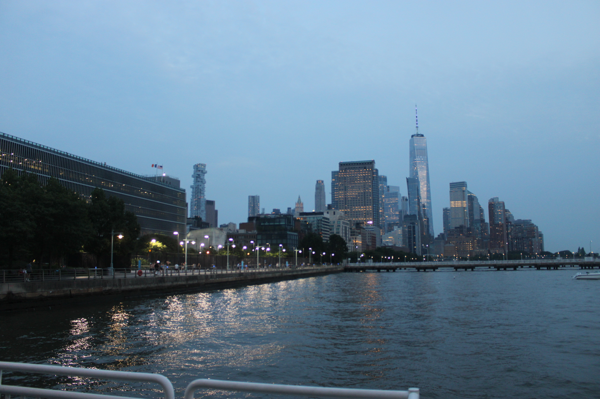

about

Charlie Waterman is a composer and multi-instrumentalist based in New York City whose work spans contemporary classical, film, and folk music. His music draws on an eclectic mix of the downtown New York scene, Arab and Gulf traditions, and Joni Mitchellesque folk-rock.
Waterman attends LaGuardia High School, where he performs in orchestras, wind ensembles, pit orchestras, and the LaGuardia New Music Ensemble. He currently studies composition with percussionist-composer Jim Pugliese. In 2026, he attended the Boston University Tanglewood Institute Young Artists Composition Program, studying with Justin Casinghino, Martin Amlin, and Len Tetta. His music has been performed at Greenfield Hall and West Street Theater, and is regularly performed by the LaGuardia New Music Ensemble and other LaGuardia musicians. Waterman is a 2026 recipient of the ASCAP Foundation Ira Gershwin Scholarship.
cv ↗loading cv...